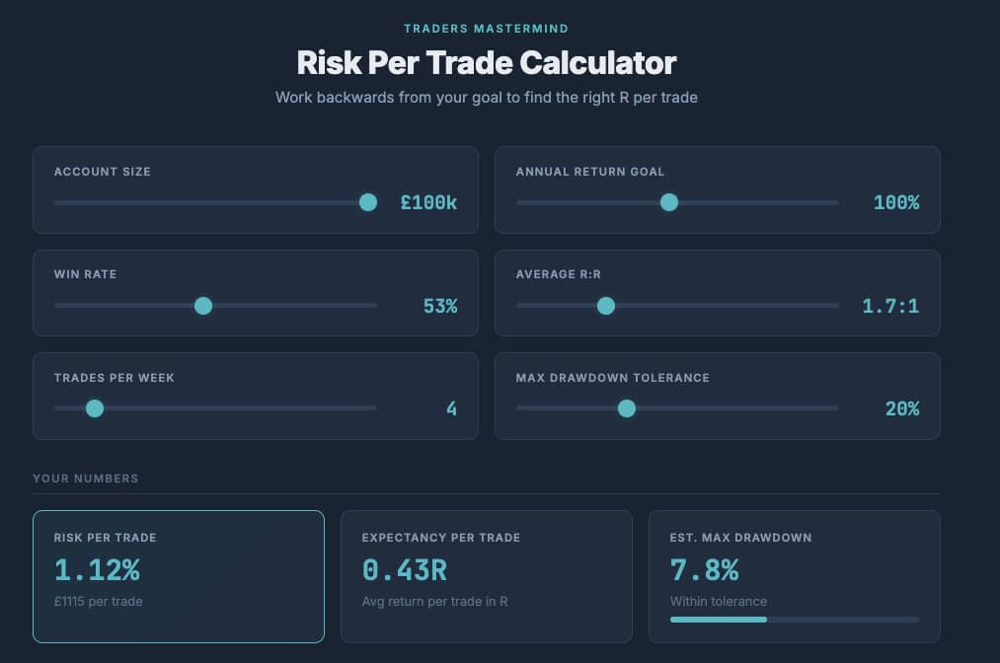

Quick question on a Friday for you...
Do you actually know how much you should be risking per trade?
Not what some book told you. Not "1% because that's what everyone says." But based on YOUR win rate, YOUR average R:R, and YOUR goals.
Because... small changes in these numbers completely change the game…
RISK PER TRADE

A 50% win rate with a 2:1 R:R?
As an active day trader, you might only need to risk £58 per trade to double a £15k account in a year.
Drop that R:R to 1.3:1? Now you need nearly £200 per trade.
Cut your trade frequency from 10 a week to 2? Now it's closer to £1,000 per trade. And your estimated drawdown goes through the roof…
Same goal, with the same win rate, yet a completely different risk profile.
I broke all of this down on the latest podcast... including a risk per trade calculator I built that lets you reverse engineer the numbers from your goal.
🎙 Listen: How Much Should You Really Risk Per Trade?
📊 Try the Risk Per Trade Calculator
Have a play this weekend. It's a different way to think about risk.
PS: Don't trust the calculator without first doing your own sums, I knocked it up using AI… I've checked it, but it could be wrong… you know the score! Oh and risk is always your decision.